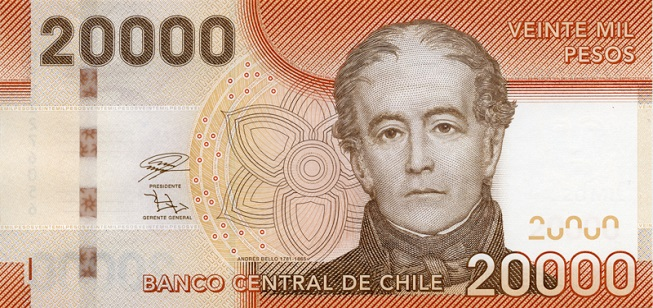

Andrés Bello
Distinción: Maestro de América
✍️ Un Genio Universal Nacido en Caracas
Nacido en Caracas en 1781, Andrés Bello fue uno de los intelectuales, humanistas y educadores más importantes de la historia de nuestra América. Maestro del propio Simón Bolívar, destacó profundamente en los campos de la filosofía, la poesía, la diplomacia y el derecho, dejando una huella imborrable que unió los destinos culturales de Venezuela y el Cono Sur.
🇨🇱 Su Legado Imborrable en Chile
En 1829, Bello llegó a Chile, país donde desarrolló la etapa más madura y brillante de su carrera y donde obtuvo la nacionalidad por gracia. Su impacto en la construcción de la República chilena fue monumental: fue el redactor principal del Código Civil de Chile (1855), una obra maestra del derecho continental que sirvió de modelo para casi toda Latinoamérica, y ejerció durante décadas como senador del país.
🏛️ Fundador de la Universidad de Chile
Andrés Bello fue la mente maestra detrás de la creación de la prestigiosa Universidad de Chile, fundada en 1842. Se convirtió en su primer rector y desempeñó el cargo hasta el día de su muerte. Su célebre frase en el discurso de inauguración, "Todas las verdades se tocan", marcó el espíritu académico, libre y pluralista de la educación superior en la nación.
💡 Una curiosidad asombrosa
El rostro de Andrés Bello es parte del día a día de todos los chilenos, ya que su retrato ilustra de manera solemne el billete de 20.000 pesos (popularmente conocido como el billete de "20 lucas"), que es el de mayor denominación económica en el país. Además, se le rinde tributo con calles, avenidas y una universidad privada que lleva su nombre, consolidándolo como el venezolano más influyente en la historia republicana de Chile.
